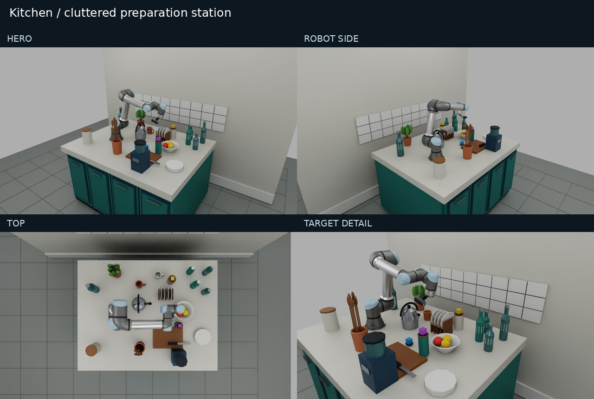

View sceneHOUSEHOLD ENVIRONMENT
Kitchen
A cluttered preparation station with utensils, containers and objects around the robot.
ROBOTICS · MULTIOBJECTIVE PLANNING
Build a scene. Compare paths. See how your robot moves through the world.
Playback is unavailable in this browser. Open or download the video.
THE RESEARCH ENVIRONMENTS
Start with the kitchen, workbench or shelves. Inspect the scene, explore saved routes, and reuse the geometry in your own experiments.

View sceneHOUSEHOLD ENVIRONMENT
A cluttered preparation station with utensils, containers and objects around the robot.
 View scene
View scene
DESKTOP ENVIRONMENT
A dense desktop workspace with books, equipment and several possible approaches.
 View scene
View scene
MULTILEVEL ENVIRONMENT
Objects at different heights, with shelf structure and clutter shaping the available routes.
Also included: E4, E5, E7 and six-wall environments. See scene files, saved routes and hardware revisions.
FROM AN IDEA TO AN EXPERIMENT
A portable Python toolkit for multiobjective probabilistic roadmaps, scene generation and saved trajectory analysis.
Build wall layouts, generate grids of scenes, or import supported static Isaac/USD geometry.
Environment optionsRun one case or a study across environments. Explore trade-offs between competing path objectives.
Experiment workflowsReview the independent mesh postcheck, compare results, and export a selected path or motion preview.
Results and exportsYOUR FIRST EXPERIMENT
The single-wall example is a short installation check. Run it on Linux or WSL with Python 3.11, then open the generated explorer in your browser.
CPU workflow · No Isaac Sim installation required
Read the setup guideThe toolkit repository is private. Sign in with a GitHub account that has access to clone it or open its guides.
git clone https://github.com/CaptJack3/multiobjective-prm-kit.git
cd multiobjective-prm-kit
python3.11 -m venv .venv
source .venv/bin/activate
python -m pip install -e '.[robot,render,usd]'
prmkit doctor
prmkit run examples/01_single_wall.yaml \
--output runs/first_wallruns/first_wall/explorer/explore.htmlKEEP EXPLORING
Commands, editable examples and guides are collected in the toolkit repository.